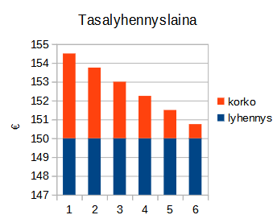
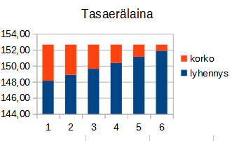
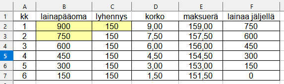
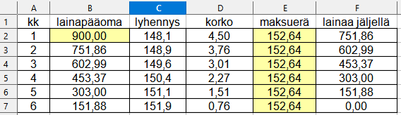

Pitkäaikaiset lainat
Contents
Pitkäaikaiset lainat#
Lainalaskelma on taulukko, jossa on kunkin kuukauden maksettava summa jaettuna lyhennyksen ja korkoon, sekä uusi lainapääoma maksun jälkeen.
Lainojen päätyypit ovat tasalyhennyslaina ja tasaerälaina.
Tasalyhennyslainassa lainapääoma lyhenee saman määrän joka kuukausi, kun taas koron osuus pienenee lainapääoman pienentyessä.
Tasaerälainassa kuukausimaksu on sama koko laina-ajan. Alussa koron osuus on suuri ja lyhennys pieni. Laina-ajan loppupuolella korko lähestyy nollaa, ja lainapääoma lyhenee nopeasti. Tasaerälaina on nykyään yleisin. 
Tasalyhennyslainan lyhennyslaskelma#
Esimerkkinä 900 euron tasalyhennyslaina, jonka laina-aika on 6 kk, nimelliskorko 6% => kk-korko on 0.5%

Ohje laskeman laatimiseen
Kirjoita soluun B2 lainan suuruus 900. Laske kk-lyhennys 900/6 = 150 ja kirjoita se kaikiin C sarakkeen soluihin.
Kirjoita 4 kaavaa: soluun D2 kaava =0,5/100*B2, soluun E2 kaaava =C2 + D2
soluun F2 kaava =B2-C2, sekä soluun B2 kaava =F2, joka kopioi lainapääoman seuraavalle kuukaudelle.Kopioi kaikki kaavat alas vetämällä kaavasolun oikeasta alakulmasta
Annuiteettilaina eli tasaerälaina#
Tasaerälainan kk-maksun laskukaava#
Nykyisin yleisin lainamuoto asunto- ja kulutusluotoissa on tasaerälaina, jossa laina maksetaan takaisin koko laina-ajan samansuuruisina pysyvinä suorituksina, jotka sisältävät sekä lyhennyksen että koron.
Alla on kaava maksuerän suuruuden laskemiseen. Kaava voidaan johtaa käyttämällä geometrisen sarjan summan kaavaa, joka löytyy kaavakirjoista. Kaavan perustelu löytyy tämän sivun lopussa olevasta liitteestä
Tasaerälainan maksuerän laskukaava
\(p=\frac{k\hspace{1mm}i}{1-(1+i)^{-n}}\)
k = lainamäärä, i = korkojakson korkoprosentti, n = erien määrä
Huom! Calc ohjelmassa maksuerä saadaan funktiolla PMT(korko,erien määrä, lainamäärä)
Esimerkki kuukausierän laskemisesta kaavalla ja taulukkolaskentaohjelmalla#
Esim. Maija ostaa tietokoneen luotolla, jonka maksuaika on 18 kk. Luottosumma on 800 Euroa, korko 6% vuodessa eli 0.5% kk:ssa. Mikä on kuukausierän suuruus?
Periaate: Maksuerien nykyarvojen summan on oltava yhtäsuuri kuin ostohinta.
Kuukausierä p on yhtälön \(800 = \frac {p}{1.005}+ \frac {p}{1.005^2} + ... + \frac {p}{1.005^{18}}\) ratkaisu.
Yhtälö on liian pitkä laskimella ratkaistavaksi. Käytetään tasaerän laskukaavaa
\(p=\frac{k\hspace{1mm}i}{1-(1+i)^{-n}}\), missä k = lainattu summa, i = lyhennyskauden korko,
n = lyhennysten lukumäärä
Sijoitusten jälkeen saadaan tasaeräksi \(p= \frac{800\hspace{1mm}\cdot \hspace{1mm}0.005}{1-1.005^{-18}} = 46.59 \)
Calc ohjelmalla: \(\color{blue}{\text{=PMT(0,5%;18;800)}}\)
Tasaerälainan lainalaskelman tekeminen taulukkolaskentaohjelmalla#
Esimerkkinä 900 euron tasaerälaina, jonka laina-aika on 6 kk, nimelliskorko 6% => kk-korko on 0.5%

Ohje laskeman laatimiseen
Lasketaan kk-erä kaavalla \(p=\frac{k\hspace{1mm}i}{1-(1+i)^{-n}} =\frac{900\hspace{1mm}0.005}{1-(1+0.005)^{-6}}=152.636 \) tai käyttämällä taulukkolaskentaohjelman valmisfunktiota PMT (suom. MAKSU). Kirjoita soluun B2 lainan suuruus ja täytä E sarake maksurän suuruudella 152.636
Kirjoita 4 kaavaa seuraavassa järjestyksessä: soluun D2 kaava =0,5/100*B2, soluun C2 kaaava = E2 - D2
soluun F2 kaava =B2-C2, sekä soluun B2 kaava =F2, joka kopioi lainapääoman seuraavalle kuukaudelle.Kopioi kaikki kaavat alas vetämällä kaavasolun oikeasta alakulmasta
Tasaerälaina, johon sisältyy “suurempi viimeinen erä”#
Esim. 5000 euron taserälaina, jonka korkojakso on 1 vuosi, laina-aika 5 vuotta ja korko 10%. Viimeisen maksun yhteydessä maksetaan ylimääräinen 2000 euron isompi erä. Mikä on tasaerän suuruus?
Periaate: Merkitään tasaerää p:llä. Tulevien maksujen nykyarvojen summan on oltava sama kuin lainattu summa.
Ts. \(5000 = \frac{p}{1.01} + \frac{p}{1.01^2} + ... + \frac{p}{1.01^5} + \frac{2000}{1.01^5}\), josta p voidaan ratkaista laskimen yhtälönratkaisimella.
Tämä menettely voidaan yleistää kaavaksi, jota käyttäen tasaerä p voidaan ratkaista peruslaskimilla.
Tasaerälaina, jossa viimeiseen erään on lisätty lainan jäännösarvo
\(p=\frac{k\hspace{1mm}i-K\hspace{1mm}i (1+i)^{-n}}{1-(1+i)^{-n}}\)
k = lainamäärä, i = korkojakson korkoprosentti, n = erien määrä, K = jäännösarvo
Moni autoliike mainostaa vaihtoautoja seuraavasti: Auton hinta on 6000 euroa, rahoitus 36 kk maksuajalla ja 0.5% kk-korolla antaa kuukausieräksi 131.69. Viimeinen maksuerä on 2000 euroa suurempi.
**Tällä tavalla saadaan kuukausierää pienennettyä. Lainaa ei siisä makset loppuun saakka, vaan asiakas jää 2000 euroa velkaa sopimuksen loppuessa, mikä usein johtaa siihen, että asiakas jatkaa asiakkuuttaan ja tekee sopimuksen uudesta vaihtoautosta.
Esim. Eero ostaa vaihtoauton osamaksulla, jonka maksuaika on 36 kk. Luottosumma on 6000 euroa, korko 6% vuodessa eli 0.5% kk:ssa. Mikä on kuukausierän suuruus, kun viimeiseen erään on lisätty jäännösarvo 2000 euroa?
Periaate: Maksuerien nykyarvojen summan on oltava yhtäsuuri kuin ostohinta.
Käytetään laskukaavaa
\(p=\frac{k\hspace{1mm}i-K\hspace{1mm}i (1+i)^{-n}}{1-(1+i)^{-n}}\), missä k = lainattu summa, i = lyhennyskauden korko,
n = lyhennysten lukumäärä (laina-aika) ja K on viimeiseen erään lisätty ns. jäännösarvo
Sijoitusten jälkeen saadaan tasaeräksi \(p=\frac{6000\hspace{1mm}0.05-2000\hspace{1mm}0.005\cdot 1.005^{-36}}{1-1.005^{-36}} = 131.69 \)
Calc-ohjelmalla: \(\color{blue}{\text{=PMT(0,5%;36;5000,-2000)}}\)
Efektiivinen korko#
Lainakorko ilmoitetaan useimmiten NIMELLISKORKONA (symboli i), esim. 6% vuodessa**
Usein lainojen korkojakso on 1 kk ja maksut ovat kk:n välein
Jos korkojakso on 1kk, nimelliskorosta pitää laskea kuukausikorko \(i_{kk}=\frac{1}{12}\)
Todellinen, “EFEKTIIVINEN KORKO” \(i_{eff}\)= 12 kuukauden korkokertoimien tulo, josta vähennetään 1
Jos korkojakso on 1kk, niin \(i_{eff} = (1+i_{kk})^{12}-1 = (1+\frac{i}{12})^{12}-1\)
Joissakin lainoissa korkojakso voi olla muu kuin vuosi tai kuukausi, esim. 1/2 v tai 3 kk.
Yleinen efektiivisen koron kaava on \(i_{eff} = (1+\frac{i}{n})^{n}-1\), n on korkojakson määrä vuodessa.
Lain mukaan lainasopimuksissa on mainittava myös efektiivinen korko
Esimerkki efektiivisen koron laskemisesta kaavalla ja calc-ohjelmalla#
Kulutusluoton nimelliskorko on 12%. Mikä on todellinen eli efektiivinen vuosikorko?
Lasketaan kuukausikorko: \(i_{kk}=12\% / 12 = 1\% = 0.01\)
Lasketaan efektiivinen korko \(i_{eff} = (1+i_{kk})^{12}-1 = (1+0.01)^{12}-1 = 1.01^{12}-1 = 0.127 = 12.68\%\)
Tähänkin on olemassa taulukkolaskentaohjelmissa täsmäfunktio:
=KORKO.EFEKT(nimelliskorko;kausia_vuodessa)=KORKO.EFEKT(12%;12) joka antaa 12.68%
Rahastosäästäminen tasaerinä#
Geometrista sarjaa käytetään myös laskettaessa tasaerinä tapahtuvan säästämisen loppusaldon laskemisessa. Olkoon p vakiona pysyvä kk-talletus, i = kuukausikorko r = 1 + i on vastaava korkotekijä ja n = jaksojen määrä.
Tällöin Loppusaldo \(S = p\cdot r^n + p\cdot r^{n-1} + ....+ p\cdot r^2 + p\cdot r\) , missä korkotekijä r = 1 + i
Oikealta vasemmalle luettaessa huomataan, että tämä on geometrinen sarja, jonka 1. termi \(a_1 = p\cdot r\) ja suhdeluku \(q = r\).
Sarjan summa on \(a_1\frac{1-q^n}{1-q}\) eli tässä tapauksessa S = \(p\cdot r\frac{1-r^n}{1-r}\) = \(p\cdot (1+i)\frac{1-(1+i)^n}{1-(1+i)} = p\cdot (1+i)\frac{(1+i)^n-1}{i}\)
Tasaeräsäästötilin loppusaldo S = \(p\cdot (1+i)\frac{(1+i)^n-1}{i}\)
Esim. Tilille tallennetaan 5 vuoden ajan 50 euroa/kk. Nimelliskorko (per vuosi) = \(3.0%\) eli kk-korko on \(0.25%\). Mikä on tilin loppusaldo?
Sijoitetaan kaavaan S = \(p\cdot (1+i)\frac{(1+i)^n-1}{i}\) p = 50, i = 0.0025, ja n = 60. Saadaan
\(S = 50\cdot 1.0025 \frac{1.0025^{60}-1}{0.0025} = 3240.4\)
Vastaus: 3240 euroa.
Liite: Tasaerän laskukaavan johtaminen geometrisen sarjan summan kaavalla#
Esim. Olkoon lainasumma k, erien määrä n, korkoprosentti i, ja korkokerroin 1 + i = r, p = laskettava maksuerä.
Periaate: Maksujen arvojen summa lainan ottohetkeen muunnettuna = lainan määrä.
\(k = \frac {p}{r} + \frac {p}{r^2} + .... + \frac {p}{r^n}\) => \(k = p(\frac {1}{r} + \frac {1}{r^2} + .... + \frac {1}{r^{n}})\) => \(p = \frac{k}{\frac {1}{r} + \frac {1}{r^2} + .... + \frac {1}{r^{n}}}\)
Nimittäjä on geometrinen jono, jossa on n termiä, 1. termi a ja suhdeluku q ovat \(\frac{1}{r}\).
Geometrisen jonon summakaavalla \(S = a \frac {1-q^n}{1-q}\) nimittäjä voidaan kirjoittaa muodossa \(\frac{1}{r} \frac {1-\frac{1}{r}^{n}}{1-\frac{1}{r}} = \frac {1-\frac{1}{r}^{n}}{r-1}= \frac {1-r^{-n}}{i}\).
Siten \(p = \frac {k}{\frac {1-r^{-n}}{i}} =\frac {k\cdot i}{1-r^{-n}} = \frac {k\cdot i}{1-(1+i)^{-n}} \)